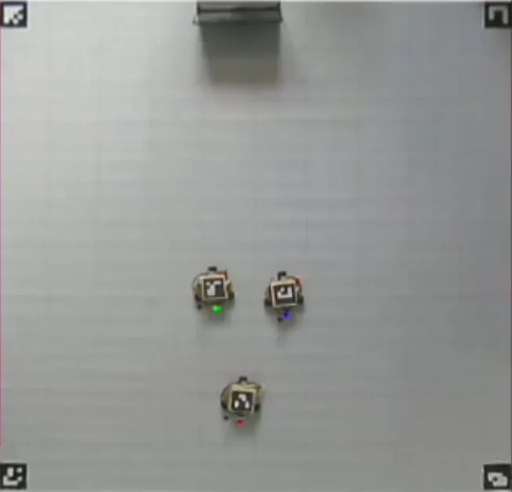

e-Yantra Robotics — Hologlyph Bots
Custom omni-wheel robots with overhead-camera vision feedback
95% positioning accuracy via ArUco · 30% faster sim-to-hardware transition

Overview
Worked on the Hologlyph Bots theme of e-Yantra Robotics Competition (eYRC) 2023-24. Engineered and programmed a multi-robot system with omni-wheel robots for autonomous geoglyph creation, using continuous servo motors with overhead-camera feedback for precise control. Developed real-time localisation with ArUco marker detection and an overhead camera, achieving 95% accuracy in robot positioning and optimising task execution using ROS2 and micro-ROS. Designed and tested control algorithms in Gazebo, with system visualisation in RViz and Foxglove — reducing simulation-to-hardware transition time by 30% and ensuring faster, more reliable system performance. Significantly enhanced skills in real-time feedback systems, robot kinematics, control algorithms, and simulation-to-hardware integration. Successfully completed all online tasks, advancing just before the offline stage.
What it does
- 3 custom omni-wheel chassis with continuous servo holonomic drive
- Overhead-camera-only localisation via ArUco markers (OpenCV) — 95% positioning accuracy
- ROS2 multi-robot coordination + micro-ROS bridge to MCUs
- Gazebo simulation with RViz + Foxglove visualisation — 30% faster sim-to-hardware transition
- Custom kinematics for omni-directional motion